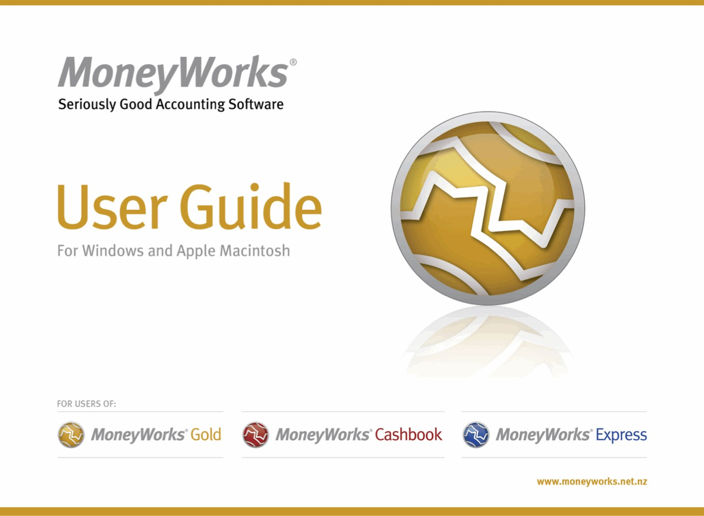

19th Edition for MoneyWorks 9.1.9
© 1992-2024, Cognito Software Ltd, All Rights Reserved.
Concept: Grant Cowie
Design and Programming: Rowan Daniell
Documentation: Grant Cowie, Rowan Daniell
Special thanks to: Our MoneyWorks support consultants and our users, whose enthusiasm and ideas over the past three decades have served to make MoneyWorks the great product it is.
Licence: This manual and the software therein described (MoneyWorks) are protected by copyright and are the exclusive property of Cognito Software Ltd and all rights are reserved. Cognito Software Ltd grants you licence to use this manual and software according to the clauses herein stated and your continued use of them confirms your agreement. The software may not, in whole or in part, be copied, reproduced, translated or reduced to any machine readable form without prior consent in writing from Cognito Software Ltd, except as a backup copy. This manual may not, in whole or in part, be copied, reproduced, translated or reduced to any machine readable form without prior consent in writing from Cognito Software Ltd. As final user, since this software is subject to the licence agreement, you may use this software only on one computer at a time, unless you have a separate licence for making further copies.
Limited Warranty: Limited warranty on disk only, if supplied. To the original buyer only, Cognito Software Ltd warrants the disk on which this product is recorded as being free of defects in material and workmanship under normal use. Your sole and exclusive remedy in the event of a defect in material or workmanship under normal use is expressly limited to replacement of the defective item. To obtain replacement, promptly return the
defective item to Cognito Software Ltd.
No warranty on product software or manuals. Even though Cognito Software Ltd has tested the software and manual and reviewed their contents, Cognito Software Ltd and its distributors and dealers make no warranties, either expressed or implied, with respect to their fitness for a particular purpose. The program and the manuals are distributed solely on an “as is” basis. The entire risk as to their quality and performance is with you. Should either the software or the manuals or both prove defective, you, and not Cognito Software Ltd or its distributors or dealers, assume the entire cost of all necessary servicing, repair, or correction. Cognito Software Ltd and its distributors and dealers will not be liable for direct, indirect, incidental, or consequential damages resulting from any defect in the software or manual, even if they have been advised of the possibility of such damage.
Nothing herein is intended to exclude, restrict or modify any rights, conditions or warranties implied by law and which by law cannot be excluded, restricted or modified.
Licenced Fonts: Some fonts are subject to a licence granted by the owner of the font. This licence may provide that the font may NOT be embedded or otherwise distributed without a licence from the font owner. Users of the software are responsible for obtaining the necessary licence from the owner of the aforementioned fonts if the user wishes to embed them. Failure to obtain the necessary licences may expose the user to legal claims by the owners of these fonts. Cognito Software Ltd and its suppliers assume no responsibility for such claims.
Copyrights: MoneyWorks program and documentation copyright © 1992-2017 Cognito Software Ltd. All rights reserved. Information in these documents is subject to change without notice and does not represent a commitment on the part of Cognito Software Ltd. It is against the law to copy the MoneyWorks program on magnetic tape, disk or any other medium for any purpose other than as an archival copy for the purchaser’s personal use. It is against the law to copy all or a portion of the MoneyWorks manual other than for the purchaser’s personal use.
Trademarks: MoneyWorks® is a registered trademark of Cognito Software Ltd.
Disclaimer: The personal and company names used in this manual and all example material are purely fictional. Any similarity to real people or companies is entirely coincidental.
Differences in Operation under MacOS and
The First Time you Run MoneyWorks 14
Registering your copy of MoneyWorks 15
Accounting for GST, VAT or Sales Tax 24
Manually Entered Bank Balances 26
Entering Outstanding Information 27
Accounting for Unpresented Items 28
Entering Opening Payables & Receivables 28
Entering your Opening Stock 31
Entering your Balance Sheet 32
Document Rollback or Revert 35
Opening a Document with a Password 38
Moving Your File to a Different Platform 41
Communicating with Your Accountant 42
Creating a MoneyWorks Now Account in MoneyWorks 47 Migrating a MoneyWorks Document into the MoneyWorks Now cloud 48
Granting access to your MoneyWorks Now
MoneyWorks Services, Support and Maintenance 51
Accessing/Managing MoneyWorks Services 51
Registering your MoneyWorks File 52
Updating/Deleting a Lodged Credit Card 53
Enabling a MoneyWorks Service 53
Disabling a MoneyWorks Service 54
How MoneyWorks Services Work 54
Renewing your maintenance later 55
Deciding on Your Chart of Accounts 57
Multilevel Account Structures 58
Creation Order of Your Chart of Accounts 59
Cloning an Existing MoneyWorks Document 61
Maintaining your Chart of Accounts 62
Changing the Security Level 67
Accessing the Calendar through mwScript 76
Entry Windows, Data Validation and Sticky Notes 78
Entry and Validation where a Code is Required 80
Creating a Record “On the Fly” 83
Assigning a validation to an entry field 85
Selecting Records in a List 91
Manipulating Records in a List 92
Finding Records using the Search Box 94
Modifying and Deleting Filters 110
Output to Excel, Word and Numbers 115
Changing the Margins and Leading 117
Printing a Form for the first time 118
Using the Default Printer on Windows 121
Accessing and Viewing Transactions 122
The Transaction Entry Window 123
Delivery and Mail Addresses 127
Entering Detail Lines by Account 129
Entering Detail Lines by Item 130
Changing between By Account and By Item Entry . 132 Recording Jobs in Transactions 132
Adjusting GST/VAT/TAX Rounding 133
Sales Tax Override (USA and Canada Only) 133
Entering Details by Percentage 135
Entering the Transaction Date 136
Using Calculations in Transactions 136
Opening Your System Calculator 137
Entering Long Text in Transactions 137
Displaying Margin Information 138
Modifying and Deleting Transactions 138
Changing Details of Transactions 139
Information on a Transaction Record 141
Printing a Transaction List 141
Printing Invoices, Receipts and other Transaction Forms 142
Making a Recurring Transaction 146
Entering an Automatic Reversing Transaction 148
Changing the Recurrence Properties 149
Stopping a Recurring Transaction 149
Finding Recurring Transactions 149
Setting up an Auto-Allocation for “Cash” Transactions 149 To create a rule 150
To View the Items in a Banking 159
Manual Electronic Payments 160
Editing the imported transactions 163
Allocating against invoices 164
Linking a bank account with a MoneyWorks GL bank account 166
Reconciling Unposted Transactions 171
Reviewing and Reprinting a Previous Reconciliation 172 Problems with Bank Reconciliations 172
Clearing Old Bank Reconciliations 173
Modifying and Deleting Names 184
Importing your Address Book 185
Modifying and Deleting Items 188
Item Reports and Enquiries 189
Debtors and Accounts Receivable 191
Overriding the Prompt Payment Terms 195
Putting a Sales Invoice on Hold 195
Printing and emailing Sales Invoices 196
Creating Multiple Sales Invoices 197
Receiving Payment for Sales Invoices 198
Invoice Receipts as Receipt Transactions 198
Using a Previous Over-payment to Pay a New
Modifying Receipts That Have Been Entered 202
Printing an Allocation Summary 202
Accepting the Batch of Debtor Receipts 203
Allocating Receipts to Invoices 204
Printing and emailing Statements 207
Creditors and Accounts Payable 209
Entering a Purchase Invoice 210
Paying Creditors Individually 212
Paying a number of creditors 214
Reprinting a Cheque or Remittance 221
Identifying Customers and Suppliers 225
Uploading your customer and supplier information 225 Sending an eInvoice 226
Invoice/Order PDF Scanning 227
Submitting your Customer and/or Supplier details 229
Receive Refund from Creditor 236
Reports with Customised Settings 244
Report Settings for Report Chains 245
Debtors/Creditors Reconciliation 254
Profit Financial Year Forecast 255
Profit and Loss for Month/Year to Date 255
Profit Monthly/Yearly Comparison 256
Profit and Loss Comparison 256
Sales Tax Report (USA, Canada) 256
Product and Customer Sales Reports 261
Customer & Supplier Enquiry 270
Managing Financial Periods 273
The Period Management Dialog Box 273
Opening a New Financial Year 277
PPD (Prompt Payment Discounts) 290
GST, VAT, Sales Tax & Tax Codes 294
Reprinting a GST/VAT Report 299
Changing the GST Parameters 300
Filling out your GST Return 300
Paying GST/VAT in Multiple Countries 301
Determining the GST/VAT Liability 302
Taxable Payments Report (Australia) 303
Customer Accounting (Singapore) 305
Setting up Customer Accounting 305
Purchasing Prescribed Goods 307
Postponed VAT Accounting (UK) 307
Special General Ledger Codes 309
Special debtor/creditor code 310
Recording your Postponed VAT 310
Using IRD Connect in MoneyWorks 318
Fiji VAT Monitoring System 326
Changes in MoneyWorks Operations 328
Of Budgets, Balances & Reminders 342
Navigating in the Budget Editor 342
Deleting Reminder Messages 349
Users, Privileges & Security 349
Password Protecting your File 349
To set up an additional user 352
To change a user’s privileges or role 354
To change the privileges for a role 354
To change or remove a password 354
Logging in when you Open a document 355
Protecting Reports and Forms by Signing 356
MoneyWorks Security Levels 357
Copying Settings between users 359
Sharing your Document over a Network 360
Accessing a shared document 361
Connecting to the local network 362
Connecting to a document on another network 362
Connecting to MoneyWorks Now 363
Closing a connection to a Server 365
Sending a Broadcast Message to Other Users 365
Uploading Reports and Forms 365
Server-Side Reporting on Datacentre 366
What’s different when you are Sharing 366
Single-User mode operations 366
Operations that may be affected by other users 367
Uploading a File to Datacentre or MoneyWorks Now 367
MoneyWorks Datacentre Server setup 369
MoneyWorks Documents Directory 371
Installing Client Software 371
Enabling SSL encrypted connections 378
Updating the Datacentre software 384
Using MoneyWorks Datacentre 385
Items, Products and Inventory 390
Modifying and Deleting Product Items and Resources 401 Printing a Product List 188
Posting stock transactions without Enable Job Costing & Time Billing 403
Posting stock transactions with Enable Job Costing & Time Billing 404
Overview of a MoneyWorks stocktake 410
Entering your new stock counts 411
Locations, Serial Numbers and Batches 413
Specifying locations on transactions 414
Serial Numbers and Batches 415
Specifying that a product is to be tracked by serial/ batch 415
Allocating serial and batch numbers 416
Assigning serial and batch numbers to sales 417
Importing transactions with serials/batches or
Paying a Deposit with Order 422
Receiving the Goods and Invoice 423
Updating the Ship Quantities on a Sales Order 430
Batch Processing of Sales Orders and Quotes 433
Stock Transfers and Requisitions 435
Remote Fulfilment Data Requirements 436
To Add a Control Account After Creating the
Transferring funds to/from a foreign bank account . 439 Sending and Receiving Invoices in a Different
Entering a Foreign Currency Transaction 440
The Transaction Exchange Rate 441
Duplicating and recurring foreign currency
Paying a Foreign Currency Invoice 441
Realised and Unrealised Gains and Losses 442
Multi-currencies: Behind the Scenes 443
Creating a Departmental Group 450
Deleting a Department Group 451
Associating Departments with Accounts 451
Department Classifications 452
Adding a New Classification 285
Using Products with Departments 453
An Overview of Job Costing 455
To Manually Enter a Job Entry 467
Automatic Entry from the Transaction File 469
Modifying Job Sheet Entries 470
The Work-in-Progress Journal 474
Creating an Invoice for a Job 475
Transferring assets from an Existing Register 481
Asset Disposal and Write-offs 489
Importing Asset Categories 492
Modifying an Existing Report 506
Working with the Report Editor 506
Changing the Page Size of the Report 509
For Each...break...continue...End For 515
Running Headers and Footers 518
Creating or Modifying a Cell 525
Setting the Report Preferences 527
Creating a New Report Chain 533
Opening and Modifying a Report Chain 535
Creating an Analysis Report 539
Adding other breakdown fields 540
Selecting records for breakdown 542
Changing the breakdown fields 542
Preselecting the source records 544
Specifying the source records at print time 544
Printing An Existing Analysis Report 545
Printing from selected records 546
To print using a preset search 546
To print using a user specifiable search 546
Transaction Based Analysis Settings 546
Job Sheet Based Analysis Settings 547
Anatomy of an Analysis Report 548
Modifying an Analysis Definition 550
Analysis Definition Options 551
Exporting from Other Lists 557
Exporting Account Balances and Budgets 557
Importing the Chart of Accounts 558
Importing into Other Files 560
Using Calculations in Imports 563
Importing into Detail Lines 566
Importing Serial Numbers and Locations 566
Importing General Journals 567
Importing Payments/Receipts on Invoices 568
A note on exporting Payments/Receipts on
Field Descriptions for Products 569
Import Names Error Messages 571
Importing Direct from other Applications 572
Modifying an Existing Form 577
To change the section that you are working on 581
Conditional printing of sections 581
Borders, Fills and Pen Widths 595
Font, Size, Style, Text Colour and Alignment 597
Adding a Hot Link (Hyperlink) to a Form 602
Field References and Identifiers 606
Form Environment Variables 610
Comparison (Relational) Operators 610
Logical (Boolean) Operators 611
Function and Handler Summary 615
AgeByPeriod (per, relativeToPer) 620
Analyse (basis, sourceFile, searchExpression, breakDownFields, outputFields, fromDate, toDate [, kind] [, filterFunct]) 620
AvailableStockForBatch (productSeq, batchNum, location, exclOrderSeqNum) 621
Base64Encode (text [, boolBreakLines]) 622
ConcatAllWith (separator, text, ...) 624
ConcatWith (separator, text, ...) 624
CountLines (text [, asciiDelimiter]) 625
CreateSelection (tableName, searchExpr, [sortExpr], [descending]) 626
CreateTable ([numberOfColumns]) 626
CurrencyConvert (amount, FromCurrency, ToCurrency [, periodOrDate]) 627
CurrencyFormat (amt, currencycode) 627
DateToText (date, [format]) 628
Dice (table, rownum, colnum) 630
DollarsToEnglish (amount [, CurrencyCode] [, languageCode]) 630
ExpandDetail (expressionText [, searchExpression] [, rangeStart][, rangeEnd]) 631
ExpandList (listName, expressionText) 632
FieldLabel (fieldnametxt [, enumeration]) 632
Find (fileName.fieldNameText, searchFnText [, limit] [, delim] [, sortFieldText] [, runOnServer]) 633
GetAllContactEmailsForRole ( nameCode, role [, detailed] ) 634
GetAppPreference (preferenceName) 634
GetBalance (searchExpression, PeriodorDate [, Budget]) 634
GetContactForRole (rolebits [,
GetDatabaseFields (fileName) 635
GetDatabaseFieldSize (fileName, fieldName) 635
GetMovement (searchExpression, fromPeriodOrDate, toPeriodOrDate[, Budget]) 636
GetOffBalance (searchExpression, dateOrPeriod [, doBudget]) 636
GetPlugins (pluginType, which [, extension]) 637
GetTaxRate (taxCode, date [,bReversed]) 637
GetUIField (windowID, fieldname) 637
Head (listText, numberOfItems, asciiDelimiter) 638
If (condition, result1, result2) 639
IntersectSelection (sel1, sel2OrExprText, [sortExpr], [descending]) 640
Left (string, count [, boolInBytes]) 640
Length (string [, boolInBytes]) 640
Match (number, number, ...) 642
Mid (string, start, count [, boolInBytes]) 642
NumToEnglish (integer [, language]) 643
NumToText (number [, format]) 644
Pad (text, width [, padChar] [, justify = "L|R"]) 644
ParseCSV (csvtext [, fieldSeparator] ) 644
PeriodOffset (period, offset) 645
PositionInText (string, pattern [, startChar] [, boolInBytes]) 646
ProductSOHForLocation(prodcode [, loc]) 646
Quarter (DateOrPeriod [, numQuarters=4] [, prefix="Q"]) 647
RecordsSelected (selection) 647
Regex_Match (string, regex) 648
Regex_GetMatches (string, regex) 648
Regex_Replace (string, regex, replacementex) 649
Regex_Search (string, regex [, startOffset]) 649
Regex_SearchStr (string, regex) 650
RemoveLeading (string, count [, boolInBytes]) 650
RemoveTrailing (string, count [, boolInBytes]) 651
Replace (string, pattern, txt) 651
ReplaceField (fileDotFieldname, searchExpression, expression) 651
Right (string, count [, boolInBytes]) 652
Round (number, places [, mode]) 652
SetBudget (Budget, LedgerCode, Date, Value) 653
Slice (listText, itemNumber, delimiter) 653
StocktakeNewQtyForLocation (location) 654
StocktakeStartQtyForLocation (location) 654
Sort (tabDelimTable, sortColumn[, numeric][, descending] [,skipfirst]) 654
SubTotal (listNameDotColumnName) 655
SumDetail ("expression", detail.searchExpr [, transaction.searchExpr]) 656
SumSelection ("filename.expression", searchExprOrSel) 656
TableAccumulate (tab, key, value1, ...) 657
TableAccumulateColumn (table, key, columnNum, value) 657
TableGet (table [, IndexOrKey, Colnum]) 658
Tail (listText, numberOfItems, asciiDelimiter) 659
TextToDate (text [, format]) 659
TextToNum (text [, specialFormat]) 660
TimeDiff (datetime1, datetime2) 661
Timestamp ( [zone] [, format]) 662
Trim (string [, boolNewlinesAndTabsToo]) 663
UnionSelection (sel1, sel2 | searchxExprText, [sortExpr], [descending]) 664
URLEncode (text [, optDelim]) 665
Val (exprText [, bRunOnServer]) 665
AddStatementTransaction (ref, date, tofrom, desc, amt) 667
Alert (message1, message2, ok, cancel, other, timeoutsecs) 668
AppendColumnToStdEditList (listHandle, columnFieldName, columnDefinition) 668
AppendPopupItems (windowRef, itemID,
Ask (controlType, name, value, definition, …) 669
Authenticate (username, password [,
AutoFillAcctDeptField (windowRef, itemID, bWantDept) 671
AutoFillField (windowRef, itemID, tablename) 671
ValidateFieldWithValidationString (windowRef, itemID, validationDefinition) 672
CancelTransaction (seqNum [, optionalDescription, optionalDate]) 672
ChangePrimaryKeyCode (table, oldCode, newCode)672 CheckCodeField (windowRef, itemID, tableName,
ChooseFromList (prompt, tabularText [, mode]) 673
CopyUserSettings (srcUserInitials, destUserInitials) 674 CreateArray ( [key, value, ... ]) 674
CreateFolder (parentFolderPath, newFolderName) 675 CreateListWindow (id, recordFormID, table, search,
headingString, columnsString [, modes [, properties]
CreateWindow (your_wind_id [, mode [,
Curl_GetInfo (curlhandle, info) 677
Curl_Init ([optional_url]) 678
Curl_SetOpt (curlhandle, option, value) 678
DeleteElement (array, key) 680
DeleteListLine (listRef, rowNum) 680
DeletePopupItems (windowRef, itemID) 680
DisplaySelection (sel, viewName) 681
DisplayStickyNote (winRef, tableName, seqNum) . 681 DoForm (formName, format, search [, parameters,
DoReport (reportName, format, title,
ElementExists (array, key) 683
ExchangeListRows (listRef, rowA, rowB) 683
External (command, parameters, ...) 683
Export (table, format, output [, search, sort, dir, start, limit]) 684
ExportImage (domain, ident) 685
File_GetLength (filehandle) 685
File_Move (srcPath, destPath) 686
File_Open (path [, mode="r"]) 686
File_Read (filehandle [, optionalCount]) 688
File_ReadLine (filehandle) 688
File_SetMark (filehandle, offset) 689
File_Write (filehandle, string) 689
FindRecordsInListWindow (winRef, searchExpr) 689
GetActiveListColumn (listRef) 689
GetActiveListRow (listRef) 690
GetFieldName (windowRef, fieldNum) 691
GetFieldNumber (windowRef, fieldNameString) 691
GetFieldValue (windowRef, fieldNumOrName [, boolPeriodDecode]) 691
GetListContents (listRef [, bSelectedOnly] [, bAsSelection]) 692
GetListField (listRef, rowNum,
GetListHandle (windowRef, listName) 693
GetListLineCount (listRef) 693
GetNextReference (transType [, bank]) 694
GetPersistent (table, key1, key2) 694
GetRecordForListRow (listHandle,
GetScriptText (scriptName) 695
GetTaggedValue (taggedTextString, tag) 695
GetWindowProperty (windowRef, propertyName) 696 GotoField (windowRef, field) 696
ImportImage (domain, ident, path) 697
InsertEditListObject (windowHandle, itemID, column_definition, optional_initial_data, optional_mode) 697
InsertListObject (windowHandle, itemID, column_definition, optional_initial_data, optional_mode) 698
InsertVars (string [, startdelim, enddelim]) 699
InstallMenuCommand (menuItemText, handlerNameString) 699
InstallToolbarIcon (windowRef,
JSON_Get (JSON_object, id [, id, ... ]) 700
LoadHTMLInWebView (windowRef, itemID, html) . 701 LoadPicture (windowRef, itemID, pictureSpec) 701
LoadURLInWebView (windowRef, itemID, url) 701
Mail (to, subject, content, attachmentName, attachmentPath) 701
MergeOrderLines (windowRef, lineNum) 702
ModalListWindow (id, table, search, headingString, columnsString [, modes] [, properties]) 702
ModalWindow (your_wind_id [, property_array]) . 702 ModalJobsheetEntryWindow (slotOrSelOrType [,
ModalTransactionWindow (seqOrSelOrType [, property_array]) 703
Navigator (hotlink, coachtip) 704
NotifyChanged (tablename, ...) 704
PostTransactions (selection) 705
PutRecordForListRow (listHandle, rowNumZeroBased, array) 705
ReadCurrentRecordForWindow (windowRef) 705
SavePicture (window, itemID) 706
SetExchangeRate (currency, date, period, newRate) 706 SetFieldEnabling (windowRef, fieldNameOrIndex,
SetFieldValue (windowRef, fieldNumOrName, stringValue) 707
SetFieldVisibility (windowRef, itemID, visible) 707
SetListContents (listHandle, data) 707
SetListField (listRef, rowNum, columnNumOrName, value) 708
SetListSelect (listHandle, zeroBasedRowNum, bClearOldSel) 708
SetOptionsForEditList (listHandle, optionsArray) 708
SetProgressMessage (message) 709
SetStocktakeForLocation (productCode, count [, location] [, batchNum]) 709
SetWindowProperty (windowRef, propertyName, value) 709
SetPersistent (table, key1, key2, array) 709
SetReportColumnWidth (ColName, points) 710
SetTaggedValue (taggedTextString, tag, value) 711
SortListByColumn (listRef, colNumOrName [, direction]) 711
SplitOrderLine (windowRef, lineNum, qty) 711
SyncTransactionImage (seqnum) 712
TransferFunds (fromBank, toBank, date, period, ref, analysis, description, amount [, recAmount]) 712
TryPutBackReference (transType, refnum [, bank]) 712 UpdateOrderLines (orderSeq, prod_qty_array [,
WebViewControl (window, item, commandString) 713
WriteCurrentRecordForWindow (windowRef, fieldArray) 714
WriteToTempFile (text [, filename]) 714
XML_Free (expatParserHandle) 715
XML_Parse (expatParserHandle, xmlText,
XML_SetElementHandler (expatParserHandle, startHandlerName, endHandlerName) 716
XML_SetCharacterDataHandler (expatParserHandle, handlerName) 716
XMLFree (libXMLDocOrXpathNodeHandle) 716
XMLParseFile (path [, nsList]) 716
XMLParseString (xmlstring [, nsList]) 717
XPathEval (XMLDocumentHandleOrXpathNodeHandle, XpathString [, index]) 717
BeginXMLElement (xml_hndl, element_name [, attributesArray]) 718
AddXMLElement (xml_hndl, element_name, value [, attributesArray] [,boolCDATA]) 719
EndXMLElement (xml_hndl, element_name) 719
Scripts, Automation and the REST of it 720
AllowPostTransactions (selection) 730
PostedTransactions (selection) 730
AllowDeleteRecords(tableName, selection) 730
ItemHit (windowRef, fieldNameString) 732
EnterField (windowRef, fieldNameString, fieldValueString) 733
ValidateField (windowRef, fieldNameString, fieldValueString) 733
ExitedField (windowRef, fieldNameString, fieldValueString) 733
EnterCell (windowRef, listRef, rowNum, columnNum, cellValueString) 734
ValidateCell (windowRef, listRef, rowNum, columnNum, cellValueString) 734
ExitedCell (windowRef, listRef, row, column, cellValueString) 735
URLCallback (window, webviewitemID, url) 735
SendSMTPMail (recipients, attachmentPath, subject, message, attachmentFileName) 735
TweakColumnList (windowRef, listRef) 736
Specific UI Element Handler Names 737
Invoking handlers from menus, toolbars, and other places 737
Adding a custom user interface to your scripts 738
Opening and Closing Windows 745
Appendix A—Field Descriptions 749
Account Categories, Department Classifications and Groups 750